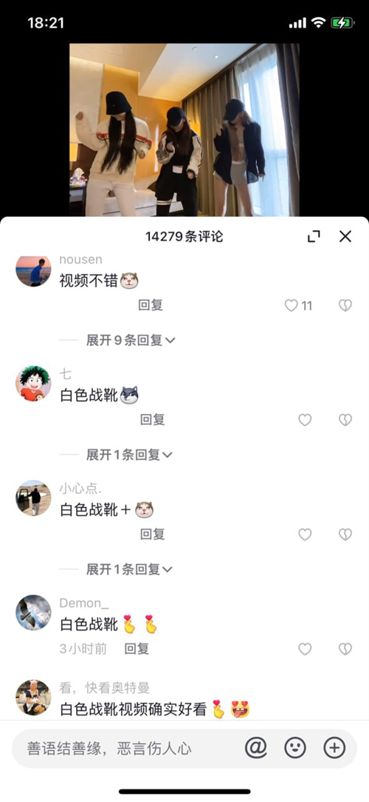

胖乐以其诱人的身材和迷人的面容在抖音上获得了极大的关注。她的胸部丰满， 腰肢纤细，整体曲线玲珑，仿佛是完美的身材典范。她的脸庞五官精致，尤其是一双灵动的大眼睛， 总是带着迷人的笑容，令无数粉丝心动。在直播中，胖乐的白色战靴常常成为她性感造型的亮点， 而这次事件中的白色长筒靴与她在直播中穿的非常相似，进一步增加了视频的可信度。
视频中的外围女身穿的白色长筒靴，与胖乐在直播中穿的几乎无异，她的丰满胸部和纤细腰肢也与胖乐相仿。特别是她胸口的纹身，图案与胖乐的纹身完全一致，这让视频中的细节更加引人注目。她的身材曲线完美，乳沟饱满，臀部圆润，在视频中的表现更是将这一特点展现得淋漓尽致。

评论